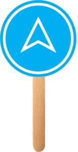

<!DOCTYPE html>
<html lang="en"></html>
<head>
    <meta charset="UTF-8">
    <meta name="viewport" content="width=device-width, initial-scale=1.0">
    <meta http-equiv="X-UA-Compatible" content="ie=edge">
    <title>Tech Elevator Popsicles</title>
    <link rel="stylesheet" href="https://use.fontawesome.com/releases/v5.4.1/css/all.css" integrity="sha384-5sAR7xN1Nv6T6+dT2mhtzEpVJvfS3NScPQTrOxhwjIuvcA67KV2R5Jz6kr4abQsz" crossorigin="anonymous">
    <link href="https://fonts.googleapis.com/css?family=Roboto+Slab" rel="stylesheet">
    <link rel="stylesheet" href="styles.css">
</head>
<body>
    <header id="header-grid">
        <div id="picture-and-title">
            
            <h1 id="headline">Tech Elevator Popsicles</h1>
        </div>
        <nav id="header-buttons">
            <button id="home button" class="header-button"><a href="index.html">Home</a></button>
            <button id="store button" class="header-button"><a href=#>Store</a></button>
            <button id="contact us button" class="header-button"><a href="contact-us.html">Contact Us</a></button>
        </nav>
    </header>
    <main id="main-flexbox">
        
        <div id="did-you-know-section">
            <h2>Did You Know?</h2>
            <ul>
                <li>The earliest known popsicles date as far back as 1872. Back then, a popsicle was called a <em>Hokey-Pokey</em>.</li>
                <li>Popsicles are also known as freezer pops, ice lollies, and ice pops.</li>
                <li>The world's largest popsicle was made in 1997 and was 21 feet tall.</li>
                <li>Popsicles have become so popular that a popular arts and craft item is called a popsicle stick.</li>
            </ul>
        </div>
    </main>
    <section id="popsicle-race-section">
        
        
        <h2>Popsicle Race</h2>
        <p>Don't forget to sign up for the race! Each attendee will receive their own box of popsicles when they reach the end.</p>
   
    </section>
    <section class="the-popsicles-store">
            <h2>Get refreshed this Summer!</h2>
            <p>Mark this very special occasion of the launch of the Tech Elevator Popsicles by buying a gift from our stunning array of items, shipped directly from Cleveland.</p>
            <button id="the-store-button" class="store-button"><a href=#>Store</a></button>
    </section>
    <footer>
    <div>© Tech Elevator 2022</div>
    </footer>
</body>